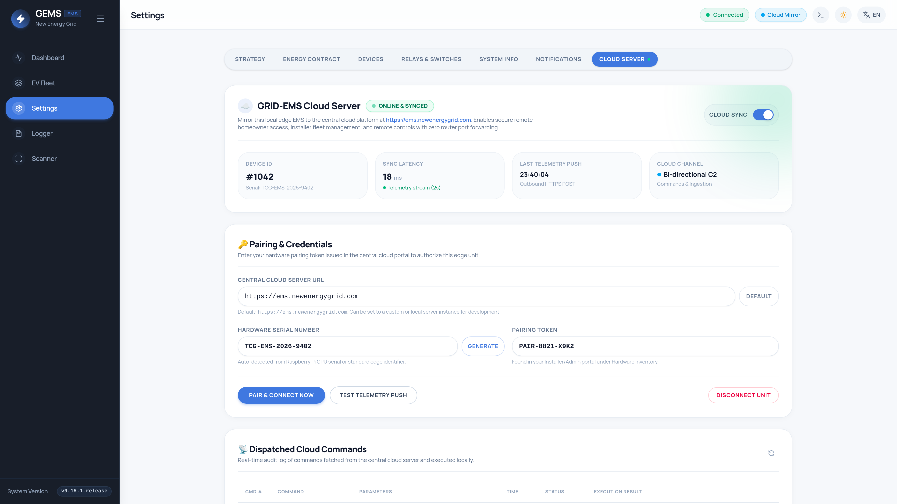

This manual provides electricians, solar installers, fleet operators, and system integrators with technical specifications and field procedures required to pair local edge GEMS installations with GRID-EMS-SERVER.
| Section | Topic | Primary Audience |
|---|---|---|
| Section 1 | Architecture & Communications Topology | Systems Engineers, Network Architects |
| Section 2 | Network & Firewall Prerequisites | IT Administrators, On-Site Installers |
| Section 3 | Pairing & Cryptographic Handshake Protocol | Field Commissioning Technicians |
| Section 4 | Live Telemetry Ingestion Engine & Metrics Schema | Fleet Integrators, Software Engineers |
| Section 5 | Remote Command Dispatch & Execution Engine | CPO Operators, Grid Aggregators |
| Section 6 | UI Operation: Settings → Cloud Server Tab | Commissioners, Technical Support |
| Section 7 | Security, Privacy & Edge Autonomy Guarantee | Data Compliance Officers, Security Teams |
| Section 8 | Troubleshooting, Status Codes & Field Diagnostics | Service Technicians, Helpdesk Tier 2 |
GEMS communicates with GRID-EMS-SERVER via an outbound-only polling and telemetry push pipeline. In this architecture, the edge controller initiates all connections over HTTPS, completely eliminating the need for inbound router ports, dynamic DNS services, or public IP addresses at the customer premises.
Before commissioning the cloud connection on site, verify that the local network meets the following outbound routing criteria:
| Destination Host | Protocol | Port | Direction | Purpose |
|---|---|---|---|---|
ems.newenergygrid.com (or custom server host) |
HTTPS (TLS 1.2/1.3) | TCP 443 | Outbound | Device registration, telemetry ingestion, remote command ack |
Local DNS (e.g., 1.1.1.1, 8.8.8.8, Gateway) |
DNS | UDP/TCP 53 | Outbound | Host resolution of cloud server domain name |
NTP Time Server (e.g., pool.ntp.org) |
NTP | UDP 123 | Outbound | System clock accuracy (required for valid TLS certificates & timestamps) |
ems.newenergygrid.com is not subject to deep-packet SSL inspection (MITM proxying) unless the enterprise CA root certificate is installed into the Debian system trust store (/usr/local/share/ca-certificates/).
Pairing authorizes a physical GEMS edge device to push data to a specific tenant/site account within GRID-EMS-SERVER. Pairing uses a secure two-phase handshake.
https://ems.newenergygrid.com. Navigate to Sites → Add New EMS Node and copy the generated 16-character hardware pairing token (e.g., PAIR-8821-X9K2)./proc/cpuinfo (format: TCG-EMS-RPI-XXXX). If running on generic x86/ARM hardware, GEMS generates a unique pseudo-random tag (e.g., TCG-EMS-2026-9402).
POST /api/v1/device/register HTTP/1.1
Host: ems.newenergygrid.com
Content-Type: application/json
User-Agent: GRID-EMS-Agent/9.4.0
{
"serial_number": "TCG-EMS-2026-9402",
"pairing_token": "PAIR-8821-X9K2",
"model": "GEMS v9.4 Pro",
"firmware_version": "v9.4.2",
"ip_local": "192.168.1.150"
}
Upon verifying that the pairing token is valid and unallocated, the server generates a permanent device_id and a high-entropy 256-bit device_secret token:
HTTP/1.1 200 OK
Content-Type: application/json
{
"status": "ok",
"device_id": 1042,
"device_secret": "sec_live_9f82a1e0b5c43d88192a0e447b9101c5",
"message": "Device paired successfully"
}
The GEMS engine securely commits the received device_id and device_secret into the local SQLite database (site_settings table). From this moment forward, the pairing token is retired, and all subsequent communications use the cryptographic device secret.
Once paired, the CloudManager goroutine executes a background loop pushing telemetry at the configured sync interval. Every sync packet is formatted according to the standardized GRID-EMS-SERVER JSON schema:
POST /api/v1/device/telemetry HTTP/1.1
Host: ems.newenergygrid.com
Content-Type: application/json
X-Device-Secret: sec_live_9f82a1e0b5c43d88192a0e447b9101c5
X-Device-Serial: TCG-EMS-2026-9402
User-Agent: GRID-EMS-Agent/9.4.0
{
"solar_power_watts": 4800,
"grid_power_watts": -1450,
"battery_power_watts": -1200,
"battery_soc": 78.5,
"battery_temperature": 24.2,
"battery_health": 99.0,
"home_consumption_watts": 850,
"ev_power_watts": 1300,
"ev_charging_mode": "eco",
"ev_connected": 1,
"ev_soc": 65.0,
"heat_pump_watts": 1200,
"heat_pump_state": "boost",
"relay1_state": 1,
"relay2_state": 0,
"current_tariff_eur_kwh": 0.1245,
"spot_price_eur_mwh": 80.0,
"l1_current_amps": 6.3,
"l2_current_amps": 0.0,
"l3_current_amps": 0.0,
"frequency_hz": 50.01,
"voltage_v": 231.4,
"solar_energy_today_kwh": 24.6,
"grid_import_today_kwh": 2.1,
"grid_export_today_kwh": 14.8,
"home_energy_today_kwh": 11.4,
"ev_energy_today_kwh": 6.8
}
Central operators, installers, or virtual power plant (VPP) aggregators can send commands down to any edge unit via GRID-EMS-SERVER. When the edge pushes telemetry, the server attaches pending commands in the response payload:
HTTP/1.1 200 OK
Content-Type: application/json
{
"status": "ok",
"device_id": 1042,
"server_time": "2026-09-07T17:19:55Z",
"pending_commands": [
{
"id": 101,
"command": "set_strategy_mode",
"payload": {
"mode": "flanders",
"peak_limit_kw": 2.5
}
}
]
}
| Command Name | Payload Parameters | Edge Action Executed |
|---|---|---|
set_strategy_mode |
mode: string ("eco", "flanders", "dynamic", "zero_export"), peak_limit_kw: float |
Updates active energy strategy and immediately applies Flanders capacity ceiling to EV and battery loops. |
set_battery_mode |
device_id: int, mode: string ("auto", "charge_grid", "discharge_grid", "hold") |
Dispatches Modbus holding register commands to inverter to force battery charge or arbitrage discharge. |
throttle_ev_charger |
device_id: int, max_current_a: int (6 - 32) |
Adjusts charging current limit via Modbus TCP register 5012 or OCPP SetChargingProfile. |
set_relay |
relay_id: int (1 or 2), state: int (0 or 1) |
Actuates physical GPIO or smart HTTP relay (e.g. Shelly Pro 2) for heat pump SG-Ready or thermal boost. |
reboot |
delay_sec: int (default 5) |
Executes graceful Linux system reboot (sudo systemctl reboot) after acknowledging command. |
Following local execution, GEMS acknowledges the result by posting to /api/v1/device/commands/{id}/ack with status (executed or failed) and execution notes. An audit log of all executed commands is displayed in real-time on the GEMS Cloud tab.
Field commissioning of the cloud connection requires less than two minutes in the GEMS Web UI:
Open the GEMS dashboard in your browser (http://<raspberry-pi-ip>) and click Settings in the navigation sidebar. Select the Cloud Server tab from the horizontal tab strip.
Verify that the Central Cloud Server URL is set to https://ems.newenergygrid.com (or enter your custom self-hosted endpoint). Paste your 16-character pairing token into the Pairing Token field.
Click Pair & Connect Now. Once the card displays ● ONLINE & SYNCED with a green indicator, click Test Telemetry Push to verify end-to-end telemetry ingestion. The round-trip sync latency will be calculated and displayed (typically 15–30 ms).
X-Device-Secret header issued during registration. Replay attacks and spoofing are prevented by server-side timestamp validation.In accordance with European privacy and data minimization directives (GDPR):
| Reported Error / Status | Probable Root Cause | Recommended Field Resolution |
|---|---|---|
| Disconnected / Gray | Cloud Sync switch is toggled OFF or unit has not been paired. | Toggle the Cloud Sync switch to ON and click Pair & Connect Now. |
Handshake failed: dial tcp: lookup... |
DNS resolution failure on Raspberry Pi local network adapter. | Verify gateway DNS settings. Test with ping ems.newenergygrid.com in Cockpit terminal (port 9090). |
HTTP 401 Unauthorized |
Device secret was invalidated or removed from the central portal. | GEMS automatically attempts re-registration. If token expired, generate a new token in the portal and re-pair. |
Telemetry push network error: timeout |
Local router is blocking outbound port 443 or internet bandwidth is saturated. | Verify router firewall rules. Ensure outbound TCP port 443 is unrestricted. |
| High Latency (> 500 ms) | Poor Wi-Fi signal or congested cellular 4G/5G backup router. | Connect Raspberry Pi via dedicated Cat6 Ethernet cable rather than Wi-Fi. |
Installers can monitor the live CloudManager daemon via SSH or the built-in Cockpit Web Terminal (Port 9090):
# Inspect live cloud synchronization logs
sudo journalctl -u gems -f | grep CloudManager
# Test DNS and outbound HTTPS connectivity directly from edge
curl -Iv https://ems.newenergygrid.com/api/status
# Verify edge site settings and stored cloud device ID
sqlite3 /var/lib/gems/gems.db "SELECT id, cloud_enabled, cloud_server_url, cloud_device_id, cloud_serial_number FROM site_settings WHERE id = 1;"